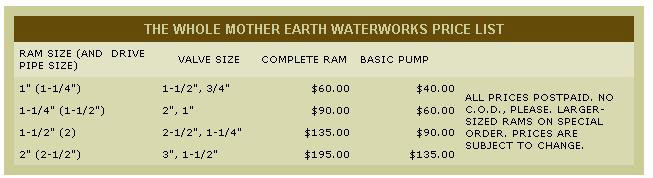

A letter in MOTHER NO. 21, pg. 3, brought news of the founding of The Whole Mother Earth Waterworks and Edward Barberie's outstandingly generous offer to build you a hydraulic ram pump free . . . when he can afford to and if you can meet the prerequisites for the device's installation. That same piece of correspondence gave a brief description of the pump's working and full instructions for its manufacture out of simple plumbing parts. The following letter gives an update on TWMEW..
I would like to see The Whole Mother Earth Waterworks become a non-profit, tax-exempt and partially self-supporting organization of mostly non-paid volunteers, with the purpose of helping to bring water to homes, farms and communities that might otherwise be without . . . and to do this with the least possible harm to Mother Earth.
We have been able to keep our promise to the readers of THE Mother Earth News and soon we hope to be able to provide-still for free-a much improved model of our hydraulic ram that will cost us twice as much to produce as the original one.
We are making progress. We can now manufacture almost any size of hydraulic ram that anyone would want . . . and we have improved the rams so they work almost as well as any other kind. The rams can lift water up to 350 feet now and have a removable bushing on the input, so you can use a larger drive pipe at low heads. The basic instructions as contained in MOTHER NO. 21 still apply, except for the changes to improve the performance and size of the rams. I'm sorry, but we can't give out the new instructions except with the basic pumps or complete rams themselves. The right valves are not easy to get and, as some people who've tried have found out, the wrong valves just won't work. And we have to sell the larger rams to make the whole idea of TWMEW work.
We are going to offer the rams in two ways: [1] The basic pump mechanism only, or [2] the complete ram (with air chamber, pressure gauge and all fittings). We charge only about 10% above our costs for the valves. Most of the other parts could be bought locally.
We also need some physical help to make the idea work. We have received letters from people who have asked for help with their water systems, but who are just too far away for me to be able to help them. We need volunteers, all over the world, who can help these people get their water systems working and not only with ram installations, but with whatever else is needed.
Edward Barberie
The Whole Mother Earth Waterworks
Green Spring, W. Va. 26722
OK, gang, there you have it. If you need one of the larger hydraulic ram pumps . . . you can buy it from TWMEW If a smaller ram will fit your requirements, I suggest, as I did in Issue NO. 22, that you can build your own from the basic instructions in Edward Barberie's letter in MOTHER NO. 21. . . or you can now go to TWMEW for the new, improved setup.
If you know something about water systems and would like to volunteer your time, write to TWMEW and Ed, in turn, will put you in touch with the people who need help. If nothing else, spread the word about this alternate water system. Here's an organization that's "doing" and not just paying lip service. In any correspondence with TWMEW, of course, we suggest you enclose a stamped, self-addressed envelope.-MOTHER.
|
 |
|
|